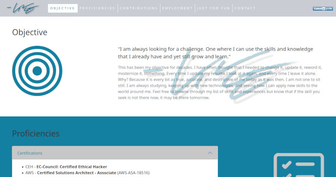

My Resume Site

My online resume, which lists all of my skills, knowledge, and experiences. Most resumes do this, however this site was built using all of my skills, knowledge, and experiences. From the design of the site and the handwritten code to the configuration of the hosting solution. This is my online demonstration of what I am capable of.